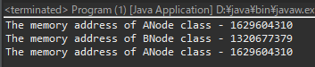

[Design pattern] 2-5. フライウェイトパターン(Flyweight pattern)
こんにちは。明月です。
この投稿はデザインパターンのフライウェイトパターン(Flyweight pattern)に関する説明です。
フライウェイトパターン(Flyweight pattern)という英語の意味は軽量化するという意味です。なので、インスタンスの生成を最小化してメモリの使用をできれば節約する方法です。
構造パターンのシングルトンバージョンだと思えば良いでしょう。でもsingletonみたいにstaticを利用することではなく、普通のMap(Dictionary)を利用します。

Reference - https://en.wikipedia.org/wiki/Flyweight_pattern
#pragma once
#include <stdio.h>
#include <iostream>
#include <map>
using namespace std;
// INodeインターフェース
class INode {
public:
// 抽象関数
virtual void print() = 0;
virtual ~INode() {};
};
// Nodeインスタンスを生成するBuilderクラス
class NodeBuilder {
private:
// インラインクラス(外部から参照できない。)
// INodeインターフェースを継承
class Node : public INode {
private:
// メンバー変数
char data;
int count = 0;
public:
// コンストラクタ
Node(char data) {
// dataを格納
this->data = data;
}
// 出力関数
virtual void print() {
// 出力、dataは入力した値で、countはBuilderから呼び出すたびに増加したcountだ。
cout << this->data << " Node counting - " << this->count << endl;
}
// カウント関数
void counting() {
// count変数の値を1増加
this->count++;
}
};
// flyweightマップ
map<char, Node*> flyweight;
public:
// Nodeクラスを生成する関数
Node* getNode(char data) {
// data値でflyweightマップからdataをキーにするNodeインスタンスがあるかどうか確認
if (this->flyweight.find(data) == this->flyweight.end()) {
// なければインスタンスを生成する。
this->flyweight.insert(make_pair(data, new Node(data)));
}
// flyweightマップでdataをキーでNodeインスタンスを取得
Node* node = this->flyweight.at(data);
// Nodeクラスのcountを1増加
node->counting();
// リターン
return node;
}
// デストラクタ
~NodeBuilder() {
// flyweightマップにあるインスタンスをすべてメモリ解除
for (map<char, Node*>::iterator ptr = this->flyweight.begin(); ptr != this->flyweight.end(); ptr++) {
// メモリ解除
delete ptr->second;
}
}
};
// 実行関数
int main() {
// NodeBuilderインスタンス生成
NodeBuilder builder;
// aのキーでNodeインスタンスを取得する。
INode* node = builder.getNode('a');
// 出力
node->print();
// bのキーでNodeインスタンスを取得する。
node = builder.getNode('b');
// 出力
node->print();
// aのキーでNodeインスタンスを取得する。
node = builder.getNode('a');
// 出力
node->print();
return 0;
}
BuilderというクラスでgetNodeからNodeインスタンスを取得します。
そのことでaのキーで取得した時にはcountが2になりました。その意味はaを二回呼び出しましたが、インスタンスは同じという意味ですね。つまり、二回目から呼び出したらインスタンスを新しく生成しなくて、mapに同じインスタンスを取得することがフライウェイトパターンです。
import java.util.HashMap;
import java.util.Map;
// インターフェース
interface INode {
// 抽象メソッド
void print();
}
// INodeを継承したANodeクラス
class ANode implements INode {
// 抽象メソッドを再定義する。
public void print() {
// コンソールに出力
System.out.println("The memory address of ANode class - " + super.hashCode());
}
}
// INodeを継承したbNodeクラス
class BNode implements INode {
// 抽象メソッドを再定義する。
public void print() {
// コンソールに出力
System.out.println("The memory address of BNode class - " + super.hashCode());
}
}
// ファクトリークラス
class NodeFactory {
// flywieghtパターン
private Map<Class<? extends INode>, INode> flyweight = new HashMap<>();
// Nodeインスタンスを取得
public INode getNode(Class<? extends INode> clz) {
// flywieght変数のマップに格納されてない場合
if (!flyweight.containsKey(clz)) {
// パラメータタイプがANodeならANodeのインスタンスを生成して格納。
if (clz == ANode.class) {
flyweight.put(clz, new ANode());
}
// パラメータタイプがBNodeならBNodeのインスタンスを生成して格納。
else if (clz == BNode.class) {
flyweight.put(clz, new BNode());
} else {
// その以外は例外処理
throw new UnsupportedOperationException();
}
}
// 一回に生成されたものは再使用
return flyweight.get(clz);
}
}
// 実行クラス
class Program {
// 実行関数
public static void main(String[] args) {
// ファクトリークラス生成
var factory = new NodeFactory();
// ANodeインスタンス取得
factory.getNode(ANode.class).print();
// BNodeインスタンス取得
factory.getNode(BNode.class).print();
// ANodeインスタンス取得
factory.getNode(ANode.class).print();
}
}

実はフライウェイトパターンは上のファクトリーメソッドパターンとともによく使います。Factoryでインスタンスを生成せずに一回生成されたインスタンスは再使用ということです。
でも、ファクトリ―メソッドパターンなのでClassを追加するたびにFactory関数を修正しなければならないですね。
using System;
using System.Collections.Generic;
// IDaoインターフェース
interface IDao
{
// 抽象関数
void Select();
}
// IDaoインターフェースを継承したADao
class ADao: IDao
{
// 関数再定義
public void Select()
{
// コンソールに出力
Console.WriteLine("ADao was selected!");
}
}
// IDaoインターフェースを継承したBDao
class BDao : IDao
{
// 関数再定義
public void Select()
{
// コンソールに出力
Console.WriteLine("BDao was selected!");
}
}
// FactoryDaoクラス
class FactoryDao
{
// フライウェイトパターンのDictionary
private Dictionary<Type, IDao> flyweight = new Dictionary<Type, IDao>();
// Daoインスタンスを取得
public T GetDao<T>() where T : IDao
{
// ジェネリックタイプでフライウェイトディクショナリにインスタンスがあるかどうか確認
if (!flyweight.ContainsKey(typeof(T)))
{
// なければReflection機能を利用してインスタンス生成
flyweight.Add(typeof(T), (IDao)Activator.CreateInstance(typeof(T)));
}
// インスタンスリターン
return (T)flyweight[typeof(T)];
}
}
class Program
{
// 実行関数
static void Main(string[] args)
{
// FactoryDaoインスタンス生成
var factory = new FactoryDao();
// ADaoインスタンスを受け取ってSelect関数を実行
factory.GetDao<ADao>().Select();
// BDaoインスタンスを受け取ってSelect関数を実行
factory.GetDao<BDao>().Select();
// 任意のキーを押してください
Console.WriteLine("Press any key...");
Console.ReadKey();
}
}
上のれ例ではJavaの例と似ていますが、FactoryDao中をReflectionとGeneric機能を利用してインスタンスを取得することにしました。
このパターンどのところで使うかと思えば、ORMフレームワークのDaoを取得する関数で使う方法です。特にSpringで依存性注入でDaoを取得する時に、フレームワークでは上みたいな構造でインスタンスを取得することです。
つまり、一回に生成されたインスタンスは再使用しようという意味ですね。
ここまでデザインパターンのフライウェイトパターン(Flyweight pattern)に関する説明でした。
ご不明なところや間違いところがあればコメントしてください。
- [Design pattern] 3-5. メメントパターン(Memento pattern)2021/11/16 20:01:36
- [Design pattern] 3-4. イテレータパターン(Iterator pattern)2021/11/15 19:31:28
- [Design pattern] 3-3. コマンドパターン(Command pattern)2021/11/05 17:01:42
- [Design pattern] 3-2. 責任の連鎖パターン(Chain of responsibility pattern)2021/11/04 19:27:58
- [Design pattern] 3-1. ストラテジーパターン(Strategy pattern)2021/11/03 18:38:52
- [Design pattern] 2-7. ファサードパターン(Facade pattern)2021/11/02 19:32:31
- [Design pattern] 2-6. プロキシパターン(Proxy pattern)2021/11/01 19:42:44
- [Design pattern] 2-5. フライウェイトパターン(Flyweight pattern)2021/10/29 19:48:27
- [Design pattern] 2-4. デコレーターパターン(Decorator pattern)2021/10/28 20:11:13
- [Design pattern] 2-3. ブリッジパターン(Bridge pattern)2021/10/27 20:32:21
- [Design pattern] 2-2. コンポジットパターン(Composite pattern)2021/10/27 20:30:54
- [Design pattern] 2-1. アダプターパターン(Adapter pattern)2021/10/26 19:12:40
- [Design pattern] 1-5. プロトタイプパターン(Prototype pattern)2021/10/22 19:35:45
- [Design pattern] 1-4. デザインパターンの抽象ファクトリーパターン(Abstract factory pattern)2021/10/15 19:31:03
- [Design pattern] 1-3. ファクトリーメソッドパターン(Factory method pattern)2021/06/23 19:45:37
- [Java] 57. EclipseでSpring bootを設定する方法2022/02/22 19:04:49
- [Python] Redisデータベースに接続して使い方2022/02/21 18:23:49
- [Java] Redisデータベースを接続して使い方(Jedisライブラリ)2022/02/16 18:13:17
- [C#] Redisのデータベースを接続して使い方2022/02/15 18:46:09
- [CentOS] Redisデータベースをインストールする方法とコマンドを使い方2022/02/14 18:33:07
- [Design pattern] 3-6. ステートパターン(State pattern)2021/11/17 20:04:47
- [Design pattern] 3-5. メメントパターン(Memento pattern)2021/11/16 20:01:36
- [Design pattern] 3-4. イテレータパターン(Iterator pattern)2021/11/15 19:31:28
- [CentOS] Linux環境(CentOS)でCassandra(NoSQL DB)をインストールする方法(DBeaverブラウザでNoSQL使い方)2021/11/12 17:33:58
- [Design pattern] 3-3. コマンドパターン(Command pattern)2021/11/05 17:01:42
- [Window] apache-tomcatでロードバランシング(Load balancing)する方法とセッションクラスタリング（セッション共有）2021/11/05 16:58:45
- [Window] Apacheでmod_jkとmod_proxyの差異、apacheでtomcatのwebsocketのプロキシフォーワードする方法2021/11/05 16:55:05
- [PHP] Apache環境の同じホスト中でPHPとJava(Servlet)を同時に起動、運用する方法2021/11/05 16:52:04
- [C#] 61. ウィンドウフォーム(Window form)でスレッド(Thread)を使い方、クロススレッド問題解決2021/11/04 19:29:51
- [Design pattern] 3-2. 責任の連鎖パターン(Chain of responsibility pattern)2021/11/04 19:27:58